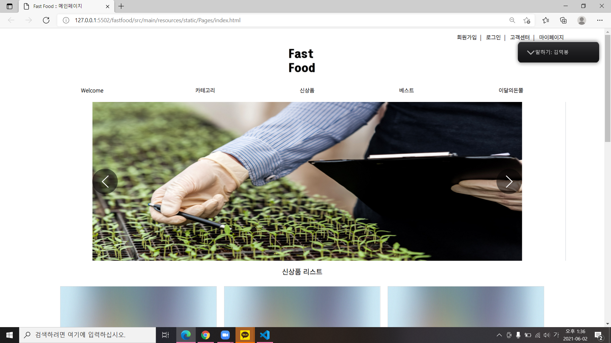
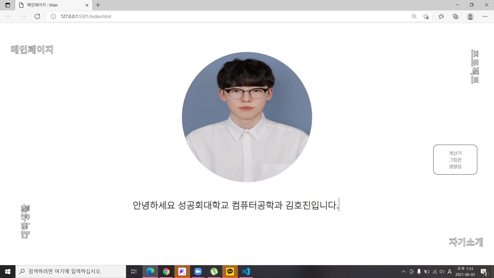

PROJECT
프로젝트 기간: 2021/03/02~2021/06/17
패스트푸드


프로젝트 제목: FastFood
프로젝트 분야: WEB
기술 스택 : HTML , CSS , JavaScript
협업 도구 : GIT , Notion
사용 기술 : 카카오 api를 이용한 결제시스템, 다음 api를 이용한 주소창 띄우기
기획 의도 :
코로나 바이러스 감염증 확산으로 인해 비대면으로 무언가를 하는 행위들이
점점 많이 늘어나고 있다. 이로써 E-커머스에 관한 사업도 많이 늘어나고
있는데 우리는 이에 따라 상품성을 인정받고 고객층들이 다양하고 접근하기
쉬운 식재료 배송 서비스를 계획했다. 패스트 푸드 (Fast Food) 라는 이름으로 선정한 이유는
말 그대로 빠른 배송 + 보장된 상품성을 주요 키워드로 구성하고 있다. 그리고 기본에 있는 쇼핑몰
페이지와는 다르게 이달의 돈쭐페이지를 통해서 사회에서 좋은 일을 하고 있는 상품을 대상으로 적극적으로
홍보를 해주는 차이점을 두었다.
후기 : 캡스톤 디자인 (졸업작품) 수업을 통해 전문적인 웹 개발을 처음 공부했는데 내가 프론트엔드에 관심을 가지게 된 가장 큰 이유가 됐고 정말 많이 성장하고 배울수있는 계기가 된 수업이다.
PROJECT
프로젝트 기간: 2021/03/02~2021/06/17
포트폴리오
